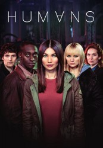

")
 
 IMDB-Wertung: 8.1 / 10
IMDB-Wertung: 8.1 / 10  Metascore:
Metascore: 
Familie Hawkins kauft einen Synth. Dieser Android, genannt Anita, soll die Hausarbeit erleichtern. Joe will dadurch seine Ehe retten, weiß aber nicht, dass seine Frau Laura ein Geheimnis vor der Familie versteckt. Außerdem merkt Laura, dass Anita sich seltsam verhält. Leo ist mit dem Synth Max auf der Flucht. Beide suchen verzweifelt nach dem Mann, der sie vor den Jägern schützen kann. George führt mit dem älteren Synth Odi, der wie ein Sohn für ihn ist, ein Leben in der Vergangenheit, bis bei Odi Defekte auftreten.
Jahr: 2015
Dauer: 45 Minuten
FSK:
Land: England Studio: RTL CrimeTonspuren:
Untertitel:
Auflösung: 720p (1280x720) Größe: 1812 MB
Genre: Drama, Sci-Fi, TV-Serie
Regisseur: Lewis Arnold, Samuel Donovan, China Moo-Young, Daniel Nettheim, Mark Brozel, Francesca Gregorini, Carl Tibbetts
Drehbuch: Bandai Namco Games
Soundtrack:
Darsteller:
 Gemma Chan als Mia
Gemma Chan als Mia Pixie Davies als Sophie Hawkins
Pixie Davies als Sophie Hawkins Neil Maskell als DS Pete Drummond
Neil Maskell als DS Pete Drummond Carrie-Anne Moss als Dr. Athena Morrow
Carrie-Anne Moss als Dr. Athena Morrow William Hurt als Dr. George Millican
William Hurt als Dr. George Millican Jonathan Aris als Robert
Jonathan Aris als Robert Paul Kaye als Silas Capek
Paul Kaye als Silas Capek Anastasia Hille als Diane
Anastasia Hille als DianeDatei: X:\HD-Serien\Humans\S01\Humans S01E01.mkv seit 31.03.2017
Festplatte: HD Serien(A-H)
 Es gibt insgesamt 182 Filme in der Gruppe 'HD-Serien'
Es gibt insgesamt 182 Filme in der Gruppe 'HD-Serien'